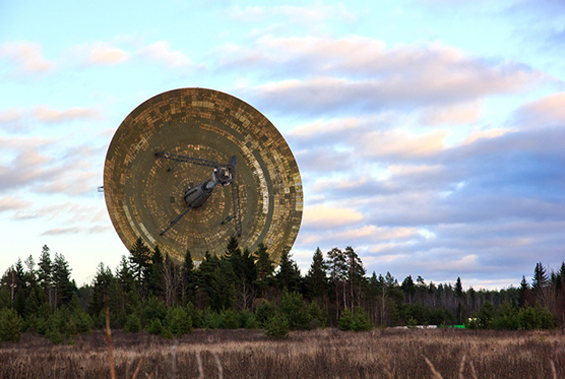
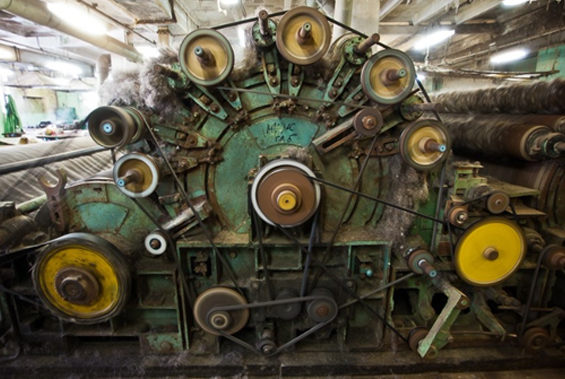
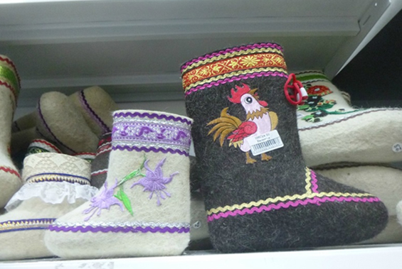
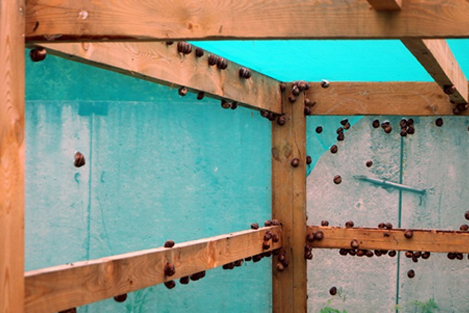

Калязин
Город Калязин - административный центр Тверской области. Расположен на правом берегу Волги (Угличское водохранилище) в 190 км от Москвы и примерно на таком же расстоянии от Твери. В черте города находится устье реки Пуды и реки Жабни, правого притока Волги.
В Калязине, практически, нет промышленности: здесь расположен только машиностроительный завод, хлебокомбинат, обувное и швейные производства.
Радиоастрономическая обсерватория, имеющая второй по величине в России телескоп, находится по соседству с Калязиным и, как магнит, притягивает сюда туристов.
Уникальный плод инженерной мысли, гигант-радиотелескоп ТНА-1500 или РТ-64 относится к советским сооружениям. На нем проводятся исследования следующих направлений: спектральная радиоастрономия, физика пульсаров, исследование галактических и внегалактических объектов и поиск космического мусора.

Битцевская фабрика валенок

Битцевская фабрика валенок – гордость Калязинского района. На фабрике «Битца» валенки проходят все ступени создания – от распаковки мешков с овечьей шерстью из Азии до формирования теплой и уютной обуви. И для каждого этапа свой станок – фабрика оборудована по высшему разряду.

Совсем недавно 2018 году в Калязине появилась фабрика по выращиванию улиток, которых используют в кулинарии для приготовления экзотических блюд.
